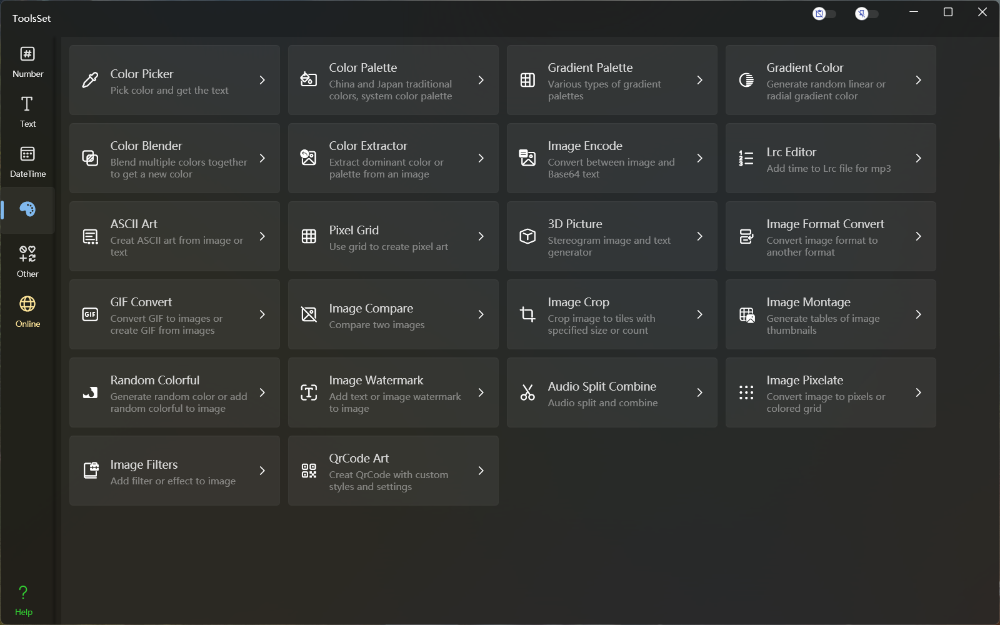

ToolsSet 媒体类
介绍
功能包括：Color Picker、Color Palette、HSV Palette、Gradient Color、Color Blender、Color Extractor、Image Encode、Lrc Editor、ASCII Art、Pixel Grid、3D Picture、Image Format Convert、GIF Convert、Image Compare、Image Crop、Image Filters

功能列表
Color Picker 拾色器
- 选取颜色
- 调色板选择
- 滑动条输入，支持RGB、HSV、HSL方式
- 16进制RGB输入
- 随机颜色
- 颜色空间转换
- RGB
- HSV
- HSL
- CMYK
- XYZ
- YIQ
- YUV
Color Palette 色盘
- 中国传统色
- 日本传统色
- Windows系统颜色
HSV Palette HSV色板
- HSV色板
- HSL色板
Gradient Color 渐变色
- 生成渐变色
- 指定颜色数量
- 指定颜色类型
- 指定渐变类型
- 指定角度或中心点
- 复制代码
- Css代码
- XAML代码
Color Blender 颜色混合
- 选取颜色
- 调色板选择
- 选择预定义颜色
- 输入16进制RGB值
- 混合颜色
- 两种颜色混合
- 多种颜色混合
Color Extractor 颜色提取
- 添加图片
- 打开图片文件
- 粘贴图片
- 提取颜色
- 提取主题色
- 提取指定数量的颜色
- 提取指定位置的颜色
Image Encode 图片Base64编解码
- 添加图片
- 打开图片文件
- 粘贴图片
- 图片编码为Base64
- 从Base64解码图片
Lrc Editor 歌词编辑器
- 打开音频文件
- 展示音频波形
- 点击插入时间
ASCII Art ASCII字符画
- 图片转为字符画
- 打开图片文件或粘贴图片
- 指定行列字符数量
- 指定绘制字符
- 指定预览字号
- 字体转为字符画
- 指定字体、字号及文本
- 指定行列字符数量
- 指定绘制字符
- 指定预览字号
Pixel Grid 像素图绘制
- 网格设置
- 指定网格数量
- 指定网格尺寸
- 绘制设置
- 指定填充颜色
- 指定输入文本
- 连续绘制开关
- 颜色锁定开关
- 结果输出
- 导出图片
- 复制文本
3D Picture 3D图片生成
- 生成3D图片
- 自定义灰度模型
- 自定义背景图
- 保存或复制结果图片
- 生成3D文本
- 字符模式
- 指定字体、字号及文本
- 指定行列字符数量
- 数组模式
- 选择类型：自定义或预定义
- 输入或编辑字符数组
- 指定绘制字符
- 指定预览字号
- 复制结果文本
- 字符模式
Image Format Convert 图片格式转换
- 源格式支持png、jpg、gif、bmp、tiff、ico
- 目标格式支持png、jpg、gif、bmp、tiff、ico、pdf
- 支持图片缩放
GIF Convert GIF转换
- 图片序列提取
- 打开GIF文件
- 提取图片序列
- 复制单帧图片
- 导出图片序列
- 生成GIF动画
- 添加图片序列
- 持续时间调整
- GIF动画预览
- 导出GIF文件
Image Compare 图片比较
- 横向比较预览
- 纵向比较预览
- 比较结果查看
Image Crop 图片分割
- 指定分割方式
- 固定数量分割
- 固定尺寸分割
- 自定义数量及尺寸
- 自定义比例分割
- 分割网格预览
Image Filters 图片滤镜
- 73种预定义滤镜处理
- 多重滤镜叠加
- 处理结果预览
- 保存处理结果